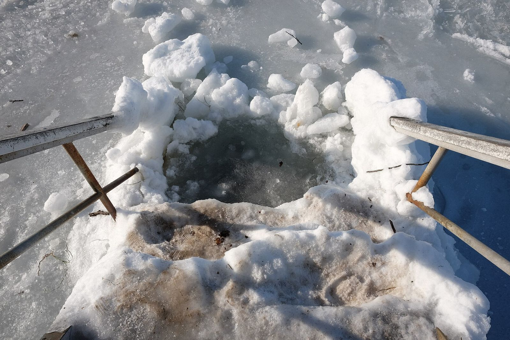

In short
Entering cold water triggers cold water shock: uncontrollable gasping, a racing heart and rising blood pressure. According to the RNLI, it lasts about 60 to 90 seconds, the riskiest moment. Hence the rules: see a doctor before starting, never dive in, get in slowly while controlling your breathing, never go alone, and if you end up in the water unexpectedly, float until the shock passes.
What happens to your body when you enter cold water?
When cold water hits the skin, it triggers a reflex: a sharp involuntary gasp, then fast breathing that is hard to control; the heart speeds up and blood pressure rises. The RNLI, the UK lifeboat charity, calls this cold water shock and points out that many cold-water deaths happen in the first minutes, because of this shock rather than hypothermia.
How long does cold water shock last?
About 60 to 90 seconds, according to the RNLI. After that, breathing settles and you regain control. That is why, the first few times, you stay close to the edge and do not try to swim straight away.
Why shouldn’t you dive in?
Because a reflex gasp with your head underwater can make you swallow water. The Swiss Lifesaving Society advises getting in slowly, without diving, keeping your head out of the water and wearing a cap.
How do you get into cold water step by step?
- With someone: a buddy on the shore or in the water (Swiss Lifesaving Society, BFU).
- Slowly, walking in and breathing out long and slow to keep your breathing steady.
- Briefly: the first few times, a few tens of seconds to a minute or two is plenty; the lifesaving society sets the maximum at as many minutes as degrees.
- Get out at the first sign of feeling unwell, intense shivering or numb fingers.
What should you do if you fall into cold water?
The RNLI teaches “Float to Live”: don’t thrash, tilt your head back with your ears underwater, spread your arms and legs and breathe calmly until the shock passes, then call for help or make for the shore. A University of Portsmouth study showed these instructions also help inexperienced people float in lakes and the sea.
Should you see a doctor before starting?
Yes, that comes first: cold water shock puts real strain on the heart. With any heart or blood pressure condition, get medical advice before your first dip. Some swimmers also get used to the feeling by ending their showers with a few tens of seconds of cold water, gradually longer; it is no guarantee, just a gentle way to discover the sensation.
Next: what to bring for winter swimming and warming up afterwards. Today’s water, beach by beach, is in the app.
Lake Geneva’s water right now
Each beach’s water temperature is in the My Lake app, updated every three hours.
Disclaimer. This article gives general information taken from the sources cited; it is not medical advice. Cold-water swimming puts real strain on the heart and can be dangerous: talk to a doctor before you start, especially with a heart condition, high blood pressure or during pregnancy. Never swim alone and follow lifeguards’ instructions. You swim at your own risk; in an emergency, call 144 in Switzerland or 112.